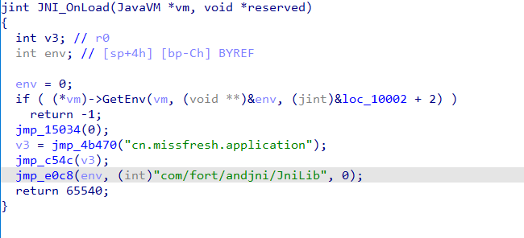
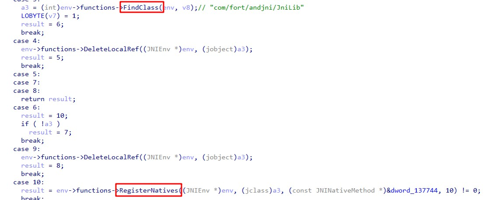

接着上文的 bb 加固分析，接下来要去弄明白它的 VMP 指令如何执行的。
分析环境
设备：Nexus 5
系统：Android 6
架构：armeabi-v7a
Java层vmp入口
bb 加固的 VMP 属于 DEX-VMP ，原理大致是：
- 修改 java 函数为 native ，vmp 实现在 native 层
- 执行时获取 java 函数对应的 codeitem ，获取参数信息，为参数的存放分配内存空间
- 找到 java 方法对应的 vmp 指令传入 vmpEntry 解析执行
- 在有需要调用 java 层函数的地方使用 jni 调用方式实现
详细的内容可以参考Android DEX-VMP 虚拟保护技术
根据上篇的分析 dump 出所有 dex 再合并成 apk 后再反编译，找到针对不同返回类型的 vmp 入口方法
vmp 的实现都在 libdexjni.so，因为要跑完 libDexHelper.so ，libdexjni.so 才会加载，而 libDexHelper 中又有内存解密和反调试，每次都手动绕过非常麻烦，所以为了方便动态调试，需要写 python 脚本辅助断到 libdexjni 的 JNI_OnLoad 。在上篇讲过 0x2A142 处的 BLX R5 指令会去执行反调试函数，里面都是扎堆的反调试逻辑，经过我的测试，只要把这段指令 nop 掉就能绕过反调试。
写一个继承自 idaapi.DBG_Hooks 的类，当 libDexHelper.so 加载时，在 init 函数结尾的地址下断点，获取然后 F9 执行。
1
2
3
4
5
6
7
8
9
10
11
| def dbg_library_load(self, pid, tid, ea, name, base, size):
if name.find(self._target_library) != -1:
...
elif name.find('libDexHelper.so') != -1:
self._helper_init = 0xD06A8 + base
self._helper_anti_dbg = 0x2A142 + base
add_bpt(self._helper_init, 0, BPT_SOFT)
print('add bp on: ' + hex(self._helper_init))
self.fn_f9()
else:
self.fn_f9()
|
运行到 init 函数结尾说明 JNI_OnLoad 已经被解密出来，那么在反调试指令的前一条指令下断点然后继续执行，断下后可以把反调试指令 patch 掉
1
2
3
4
5
6
7
8
9
| def dbg_bpt(self, tid, ea):
if ea == self._helper_init:
del_bpt(ea)
add_bpt(self._helper_anti_dbg - 2, 0, BPT_SOFT)
self.fn_f9()
if ea == self._helper_anti_dbg - 2:
idc.patch_word(self._helper_anti_dbg, 0xBF00)
del_bpt(ea)
self.fn_f9()
|
继续执行 libdexjni.so 就被加载了，然后跟 libDexHelper.so 一样在 init 下断点等待 JNI_OnLoad 解密完成，执行过去就可以了
JNI_OnLoad
libdexjni 同样实现了 init 函数，跟上篇的 libDexHelper 一样解密 JNI_OnLoad ，这里就不细说了，dump 后直接看 JNI_OnLoad

伪代码中的部分函数调用被我重命名成 “jmp_xxx”，这些函数中的指令都是下图中这种取地址然后赋值给 PC 的强制跳转
JNI_OnLoad 前三个 jmp_xxx 函数解密 vmp 执行所需的指令及解密指令的 key ，进入 jmp_e0c8 函数看看，这里面首先是调用 sub_E368 反射获取 java 类及 methodId ，并把它们保存到全局变量上
接着注册 com.fort.andjni.JniLib 的所有 native 方法，后面以 cV 函数为例

cV函数
cV 函数被注册到 sub_1416c ，看来 libdexjni 中也有 OLLVM
通过 trace 来到关键点 0x142A0 ，这里首先使用 jni 函数获取 cV 函数的最后一个参数，它是一个结构体数组的索引值，在 0x142C8 处调用函数计算并返回结构体地址
1
2
3
4
5
6
7
8
9
10
11
12
13
14
15
16
17
18
| seg000:000142A0 180 30 68 LDR R0, [R6]
seg000:000142A2 180 51 46 MOV R1, R10
seg000:000142A4 180 D0 F8 AC 22 LDR.W R2, [R0,#0x2AC]
seg000:000142A8 180 30 46 MOV R0, R6
seg000:000142AA 180 90 47 BLX R2 ; GetArrayLength
seg000:000142AC 180 31 68 LDR R1, [R6]
seg000:000142AE 180 42 1E SUBS R2, R0, #1
seg000:000142B0 180 30 46 MOV R0, R6
seg000:000142B2 180 01 92 STR R2, [SP,#0x180+var_17C]
seg000:000142B4 180 D1 F8 B4 32 LDR.W R3, [R1,#0x2B4]
seg000:000142B8 180 51 46 MOV R1, R10
seg000:000142BA 180 98 47 BLX R3 ; 调用GetObjectArrayElement获取最后一个参数，这是一个索引值
seg000:000142BC 180 D7 F8 B4 21 LDR.W R2, [R7,#0x1B4] ; method_id_intValue
seg000:000142C0 180 01 46 MOV R1, R0
seg000:000142C2 180 30 46 MOV R0, R6
seg000:000142C4 180 F4 F7 70 EA BLX sub_87A8 ; _JNIEnv::CallIntMethod(_jobject *,_jmethodID *,...)
seg000:000142C8 180 F4 F7 44 EA BLX j_153f0 ; intValue返回值做下标从int型数组上取值
seg000:000142CC 180 00 90 STR R0, [SP,#0x180+var_180]
|
这里是根据 java 层传入的 vmpId 参数值来索引这块内存，结构体的定义如下图，将其称为 vmpInfo ，结构体第一个字段和传入的索引值相同，大胆猜测它是 vmpId ，第三个字段 codeItem 怎么来的？
找到codeItem
假设现在不知道 vmpInfo 结构体的具体定义，分析过程中遇到一块内存，不知道它的意义是很常见的事，我们要做的就是先放下往后看，然后倒推它的字段，有两篇文章值得参考
某企业级加固[四代壳]VMP解释执行+指令还原
某DEX_VMP安全分析与还原
前辈的思路就是根据 VMP-DEX 的特点断点 jni 函数，比如 FindClass ，然后倒推代码逻辑
断下 FindClass 看到它在找 java/lang/Object 类，jni 函数一般会由 vmpEntry 调用，所以此时的 LR 保存的地址属于 vmpEntry 函数的地址空间，顺着 LR 找到 vmpEntry 函数开头，偏移为 0x1D0B0
现在要做的是往 vmpEntry 函数开头方向追踪 FindClass 参数是怎么来的，为了方便分析需要用到上篇分析文章中的 trace 脚本，跟踪 vmpEntry 的执行并输出日志，R1 寄存器保存字符串地址，可以看到值来自 [[SP, #0x950]]
1
2
3
4
5
| ( libdexjni.so[0x9BF6663C])0x0002163C: LDR.W R1, [SP,#0x950]
( libdexjni.so[0x9BF66640])0x00021640: LDR R2, [R0]
( libdexjni.so[0x9BF66642])0x00021642: LDR R1, [R1]
( libdexjni.so[0x9BF66644])0x00021644: LDR R2, [R2,#0x18]
( libdexjni.so[0x9BF66646])0x00021646: BLX R2 ; FindClass
|
使用 trace 日志分析的一个好处就是能直接搜索 [SP, #0x950] ，看哪里对它赋值了，来到 0x3A942 调用函数后返回值赋值，理论上跟入这个函数看是哪里赋值 R0 即可，这里不展开了，函数内是从 ([GOT + 0xD8370 + 0xC] + R1 << 2) 地址上取出字符串，R1 即是 sub_9BF4DB14 的第二个参数，而 R1 在 0x3A93C 处被赋值，这是个关键值，因为它指导 sub_9BF4DB14 获取字符串，是个字符串索引
1
2
3
4
| ( libdexjni.so[0x9BF7F93C])0x0003A93C: LDR.W R1, [SP,#0x9A4]
( libdexjni.so[0x9BF7F940])0x0003A940: MOV R0, R4
( libdexjni.so[0x9BF7F942])0x0003A942: BLX sub_9BF4DB14
( libdexjni.so[0x9BF7F946])0x0003A946: STR.W R0, [SP,#0x950]
|
继续往上追踪 [SP,#0x9A4] ，方法类似，这里直接给出结果：字符串索引 = [[[R0]] + 2] ，R0 是 vmpEntry 的第一个参数，又因为 insn 会指导程序到某处获取字符串，即字符串索引就在 insn 中，进一步可得 vmpEntry 的第一个参数就是 insn 的地址，指令是 00 10 CB 28 00 00 47 00 ，往前偏移 16 字节是 codeItem 为 01 00 01 00 01 00 00 00 16 38 09 00 04 00 00 00
看到 codeItem 最后 4 字节是 04 00 00 00 ，对照 codeItem 结构体说明 insnsSize 为 4 ，即共有 4 条指令
1
2
3
4
5
6
7
8
9
| struct CodeItem {
uint16 registersSize;
uint16 insSize;
uint16 outsSize;
uint16 triesSize;
uint32 debugInfoOff;
uint32 insnsSize;
uint16 insns[1];
}
|
回到 sub_1416c ，在 0x14642 处调用函数进入 vmpEntry ，向上找 R0 的赋值，最后发现它来自 vmpInfo 结构体，偏移为 0x8 ，这就是通过回溯法推断出了 vmpInfo 上的 codeItem 字段
1
2
3
4
5
6
7
8
9
10
11
12
13
14
15
16
17
18
| ( libdexjni.so[0x9BF192CC])0x000142CC: STR R0, [SP] ; 保存vmpInfo
...
( libdexjni.so[0x9BF1933A])0x0001433A: LDR R1, [SP] ; 取出vmpInfo
...
( libdexjni.so[0x9BF19352])0x00014352: LDR R0, [R1,#8] ; vmpInfo偏移8字节处取出codeItem
( libdexjni.so[0x9BF19354])0x00014354: STR R0, [SP,#0x13C] ; 保存codeItem
...
( libdexjni.so[0x9BF1962E])0x0001462E: LDR R0, [SP,#0x13C] ; 取出codeItem
( libdexjni.so[0x9BF19630])0x00014630: LDR R1, [SP,#0x148]
( libdexjni.so[0x9BF19632])0x00014632: STR R1, [R5,#0x1C]
( libdexjni.so[0x9BF19634])0x00014634: ADDS R0, #0x10
( libdexjni.so[0x9BF19636])0x00014636: STR R0, [R5] ; insn保存到一个内存上
( libdexjni.so[0x9BF19638])0x00014638: ADD R1, SP, #0x130
( libdexjni.so[0x9BF1963A])0x0001463A: LDR R4, [SP,#0x28]
( libdexjni.so[0x9BF1963C])0x0001463C: MOV R0, R5
( libdexjni.so[0x9BF1963E])0x0001463E: LDR R3, [SP,#0x154]
( libdexjni.so[0x9BF19640])0x00014640: MOV R2, R4
( libdexjni.so[0x9BF19642])0x00014642: BLX sub_9BF0D730 ; vmpEntry
|
指令分析
接下来要分析指令，若能看到寄存器的值会方便很多，所以重新修改 trace 脚本把寄存器值打印出来（像下面展示的汇编后面的D表示目的寄存器的值，S 表示源寄存器的值），然后搜索 insn 第一条指令 0x1000，能看到对它做了异或操作得到 0x1089 ，接着计算出跳转地址并跳转过去，往下就分别调用 FindClass 、GetMethodID 和 CallNonvirtualVoidMethodA ，所以 insn 前两个字节 0x1000 用于计算跳转 handle 的地址，而 0x28CB 是索引字符串的操作数，它就是传给 sub_9BF4DB14 的参数
1
2
3
4
5
6
7
8
9
10
11
12
13
14
| ( libdexjni.so[0x9BEDF2CC])0x0002C2CC: LDRH R6, [R6] D: [R6: 0xB399E3B8] S: [R6: 0xB399E3B8] ; 取insn前两字节
( libdexjni.so[0x9BEDF2CE])0x0002C2CE: ADD R0, PC; _GLOBAL_OFFSET_TABLE_ D: [R0: 0x3289E] S: [PC: 0x9BEDF2CE]
( libdexjni.so[0x9BEDF2D0])0x0002C2D0: LDR.W R3, [SP,#0x9E8] D: [R3: 0xFFFFFFFC] S: [SP: 0xBEF721A8]
( libdexjni.so[0x9BEDF2D4])0x0002C2D4: LDR R2, [R7,R2] D: [R2: 0x0] S: [R2: 0x0, R7: 0x9C0FD1C0]
( libdexjni.so[0x9BEDF2D6])0x0002C2D6: ADD R0, R1 D: [R0: 0x9BF11B70] S: [R1: 0xFFFFFA84]
( libdexjni.so[0x9BEDF2D8])0x0002C2D8: EOR.W R1, R2, R6 D: [R1: 0xFFFFFA84] S: [R2: 0x89, R6: 0x1000] ; 0x1000在这里做异或操作
( libdexjni.so[0x9BEDF2DC])0x0002C2DC: STR.W R1, [SP,#0x9D4] D: [R1: 0x1089] S: [SP: 0xBEF721A8] ; 这里看到异或的结果0x1089
( libdexjni.so[0x9BEDF2E0])0x0002C2E0: MOV.W R6, #0x10A D: [R6: 0x1000] S: []
( libdexjni.so[0x9BEDF2E4])0x0002C2E4: LDR.W R2, [SP,#0x9E4] D: [R2: 0x89] S: [SP: 0xBEF721A8]
( libdexjni.so[0x9BEDF2E8])0x0002C2E8: UXTB R1, R1 D: [R1: 0x1089] S: [R1: 0x1089]
( libdexjni.so[0x9BEDF2EA])0x0002C2EA: ADD.W R0, R0, R1,LSL#2 D: [R0: 0x9BF115F4] S: [R0: 0x9BF115F4]
( libdexjni.so[0x9BEDF2EE])0x0002C2EE: LDR.W R1, [SP,#0x9F4] D: [R1: 0x89] S: [SP: 0xBEF721A8]
( libdexjni.so[0x9BEDF2F2])0x0002C2F2: LDR R0, [R0] D: [R0: 0x9BF11818] S: [R0: 0x9BF11818]
( libdexjni.so[0x9BEDF2F4])0x0002C2F4: MOV PC, R0 D: [PC: 0x9BEDF2F4] S: [R0: 0x9BEE6DB8] ; 跳转
|
断下 GetMethodID ，发现查找的是构造函数，结合 FindClass ，后面的 CallNonvirtualVoidMethodA 是在调用 java/lang/Object 类的 <init> 函数，猜测 insn 前两个字节代表 invoke 指令，结合这篇文章：JNI 调用构造方法和父类实例方法，可以知道在 native 层调用父类构造方法用的就是 CallNonvirtualVoidMethodA 这个 jni 函数，进一步确定是 invoke-super 指令。
invoke 指令还需要指定参数，比如下图的 invoke-super 使用了 v6 和 v7 寄存器，那么它的指令字节码最后两字节 76 00 ，invoke-static 没有使用寄存器，于是最后两字节是 00 00 ，而cV 调用的 <init> 函数参数为空，所以第三条指令是 0x0000
最后两个字节 0x0047 ，在 0x35F7C 处搜到 0x47 ，发现也是做了异或得到 0xC0 并且参与跳转地址的计算，所以断定它也是操作码，又因为它是最后一条指令且 cV 返回值为 void ，所以对应的指令是 return-void
1
2
3
4
5
6
7
8
9
10
11
12
13
| ( libdexjni.so[0x9BEE8F70])0x00035F70: LDRH R6, [R6] D: [R6: 0xB399E3BE] S: [R6: 0xB399E3BE] ; 取出最后一条指令
( libdexjni.so[0x9BEE8F72])0x00035F72: ADD R0, PC; _GLOBAL_OFFSET_TABLE_ D: [R0: 0x28BFA] S: [PC: 0x9BEE8F72]
...
( libdexjni.so[0x9BEE8F7A])0x00035F7A: ADD R0, R1 D: [R0: 0x9BF11B70] S: [R1: 0xFFFFFA84]
( libdexjni.so[0x9BEE8F7C])0x00035F7C: EOR.W R1, R2, R6 D: [R1: 0xFFFFFA84] S: [R2: 0x87, R6: 0x47] ; 0x47参与异或
( libdexjni.so[0x9BEE8F80])0x00035F80: STR.W R1, [SP,#0x9D4] D: [R1: 0xC0] S: [SP: 0xBEF721A8]
( libdexjni.so[0x9BEE8F84])0x00035F84: MOV.W R6, #0x10A D: [R6: 0x47] S: []
( libdexjni.so[0x9BEE8F88])0x00035F88: LDR.W R2, [SP,#0x9E4] D: [R2: 0x87] S: [SP: 0xBEF721A8]
( libdexjni.so[0x9BEE8F8C])0x00035F8C: UXTB R1, R1 D: [R1: 0xC0] S: [R1: 0xC0]
( libdexjni.so[0x9BEE8F8E])0x00035F8E: ADD.W R0, R0, R1,LSL#2 D: [R0: 0x9BF115F4] S: [R0: 0x9BF115F4]
( libdexjni.so[0x9BEE8F92])0x00035F92: LDR.W R1, [SP,#0x9F4] D: [R1: 0xC0] S: [SP: 0xBEF721A8]
( libdexjni.so[0x9BEE8F96])0x00035F96: LDR R0, [R0] D: [R0: 0x9BF118F4] S: [R0: 0x9BF118F4]
( libdexjni.so[0x9BEE8F98])0x00035F98: MOV PC, R0 D: [PC: 0x9BEE8F98] S: [R0: 0x9BEEA558] ; 跳转
|
到这里可以推出第一次执行 cV 函数指令的含义以及指令格式
1
2
| 00 10 CB 28 00 00 47 00
opcode oprand 参数 opcode
|
再看看第二次执行 cV 函数，0x1069 参与异或运算得到 0x1089 ，0x008B 参与异或运算得到 0x00C0 ，这个第一次执行 cV 函数得到的结果一样，说明传给 vmpEntry 的 insn 中只有 opcode 要做一次异或解密
1
2
| 69 10 CB 28 00 00 8B 00
opcode oprand 参数 opcode
|
第四次执行 cV 函数，89 10 CB 28 01 00 跟前面一样是 invoke-super {v1}, Ljava/lang/Object;->$init ，最后的 C0 00 也是 return-void ，那么 75 00 00 00 F5 10 38 02 是什么还得去看执行了哪些 jni 函数
1
2
3
| 5B 10 CB 28 01 00 41 00 00 00 DA 10 38 02 9D 00 // 解密前
89 10 CB 28 01 00 75 00 00 00 F5 10 38 02 C0 00 // 解密后
|
本次 vmpEntry 执行了 GetFieldID ，查找类 cn/missfresh/module/base/network/a/i 的域 a ，它是一个 jstring ，接着调用 SetObjectField 给它设置一个 string 值，那么对应的 smali 就是 iput-object ，前面已经得知这个壳的 vmp 指令格式与 Dalvik 虚拟机指令格式相同，那么参考一下格式
5b 代表 iput-object ，紧跟着的一字节是寄存器，接着两字节用于索引 field ，回去看 vmp 指令，现在已经确定其中有代表 iput-object 的指令，然后前面得出结论 opcode 会做解密，所以只可能是 75 00 或 F5 10 ，又因为它给字符串域赋值，需要先把字符串存在寄存器中，即会有 const-string 指令，那么得出 75 00 是 const-string v0, "xxx" ，F5 10 是 iput-object v0, v1, Lxxx 指令
其它指令分析类似，先拿到当前执行的指令，trace 整个执行流程，整理出哪几个指令被解密了，这些指令就是 opcode ，再找出调用的 jni 函数，通过 jni 函数可以猜出 smali ，猜不到就参考这个 dex2c 项目：dcc
指令解密分析
如果要写脚本修复 vmp 指令，还得找到异或解密 opcode 用到的 key 在哪保存，通过回溯 EOR 指令可知 key地址 = [R7 + 当前执行insn地址 - insn基址]
1
2
3
4
5
6
7
8
9
10
| ( libdexjni.so[0x9BEDF2BE])0x0002C2BE: SUBS R2, R6, R2 D: [R2: 0xB399E3B8] S: [R6: 0xB399E3B8] ; 当前执行insn地址 - insn基址
( libdexjni.so[0x9BEDF2C0])0x0002C2C0: LDR.W R0, =(_GLOBAL_OFFSET_TABLE_ - 0x9BEDF2D2) D: [R0: 0x0] S: []
( libdexjni.so[0x9BEDF2C4])0x0002C2C4: LDR.W R1, =0xFFFFFA84 D: [R1: 0x0] S: []
( libdexjni.so[0x9BEDF2C8])0x0002C2C8: AND.W R2, R3, R2,LSL#1 D: [R2: 0x0] S: [R3: 0xFFFFFFFC]
( libdexjni.so[0x9BEDF2CC])0x0002C2CC: LDRH R6, [R6] D: [R6: 0xB399E3B8] S: [R6: 0xB399E3B8] ; 取insn前两字节
( libdexjni.so[0x9BEDF2CE])0x0002C2CE: ADD R0, PC; _GLOBAL_OFFSET_TABLE_ D: [R0: 0x3289E] S: [PC: 0x9BEDF2CE]
( libdexjni.so[0x9BEDF2D0])0x0002C2D0: LDR.W R3, [SP,#0x9E8] D: [R3: 0xFFFFFFFC] S: [SP: 0xBEF721A8]
( libdexjni.so[0x9BEDF2D4])0x0002C2D4: LDR R2, [R7,R2] D: [R2: 0x0] S: [R2: 0x0, R7: 0x9C0FD1C0] ; R7是key表地址
( libdexjni.so[0x9BEDF2D6])0x0002C2D6: ADD R0, R1 D: [R0: 0x9BF11B70] S: [R1: 0xFFFFFA84]
( libdexjni.so[0x9BEDF2D8])0x0002C2D8: EOR.W R1, R2, R6 D: [R1: 0xFFFFFA84] S: [R2: 0x89, R6: 0x1000]
|
再回溯得知 R7 是 key 表地址，由下面这个函数返回，地址计算公式：[[GOT + 0xD8C50 + 0x8] + vmpId * 4]
那么获取解密当前 opcode 的 key 地址的公式：[[[GOT + 0xD8C50 + 0x8] + vmpId * 4] + addr_cur_insn - addr_insn_base]
结束
这个 vmp 壳的分析到这里先结束了，要解析出指令映射表需要很大的精力和时间，虽然同一个版本的指令映射表应该是一样的，但是在内存中的 vmp 指令是加密过的，增加了写 patch 的难度。第一次接触 vmp，也是一边学习别人的方法，一边自己尝试分析，ida 搭配 trace 日志分析 OLLVM 和 vmp 效果不错，可惜 ida 下不了内存断点，地址随机化也给分析带来麻烦，之后看看有没有办法解决这些问题。